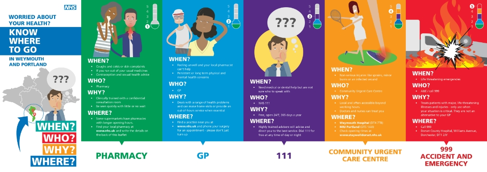
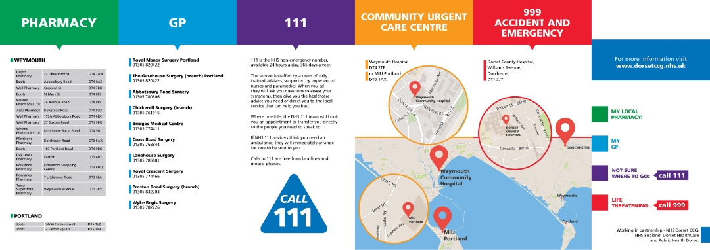
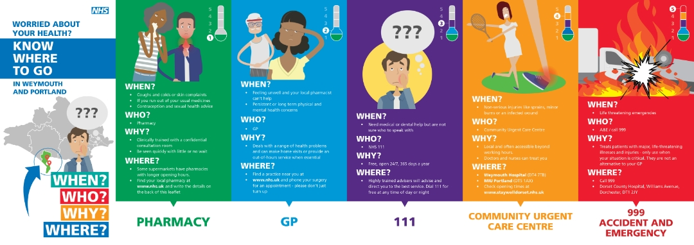
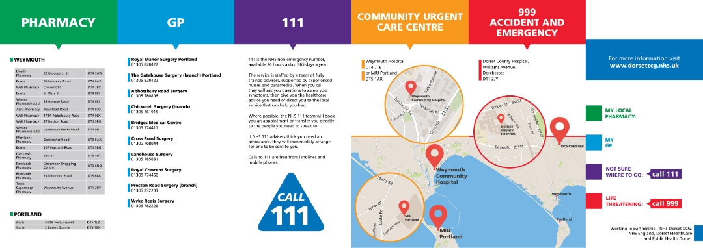

NHS Waiting Times App Prototype
The NHS Waiting Times App allows to see local waiting times for A&E in the Dorset area and provides the locations and information for all the local GP's and pharmacies. It also lets you identify the seriousness of your health problem and how to react accordingly.
NHS - When? Who? Why? Where? brochure
The project below involved creating a printed accordion fold brochure that helps the community of Weymouth and Portland navigate through different levels of health situations and give solutions on what to do in a particular event.
 



NHS New Natives Project
New Natives is a platform that helps foreign nationals to understand and access the NHS healthcare system. The app was built together as a prototype but later evolved into a website directory. It assists foreigners to understand the NHS system in their native languages. The app and the website use simple hierarchy patterns and implement the NHS brand guidelines all through.
Mental Health Services in Dorset
This was a consultation document for mental health services in the Dorset area, focusing on clear communication and accessibility.